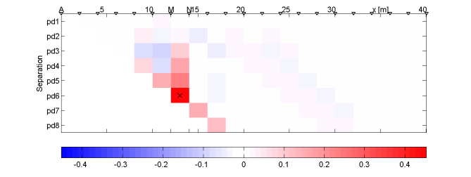

The SVD resolution analysis is an powerfull tool for estimating quality and
confidence of inversion results as well as for experimental design and the optimization
of model parameterization. For further information see here.
By means of an example is show, how the particular quantities can be interpreted.
Data resolution of a pole-dipole survey with separation 1-8
The "Model Resolution" is the main diagonal of the model resolution matrix. The value can be interpreted as reconstructability of the model cells. Shallow cells have high resolution (1), resulting in a good resistivity reconstruction in amplitude and shape. Deep cells and such outside of the center can't perfectly be reconstructed by the inversion process. A loss in amplitude is the result connected with smooth shapes.
Under the assumption of approximately constant model resolution a cell can be seen as an equivalent circle with the same model information. The consideration of model dimensions leads to the resolution radius, which can be treated as uncertainty of boundary or bodies.
The columns of the model resolution matrix show for each model cell, how a
change in resistivity is reproduced by the inversion. Shallow cells have sharp
cell resolutions, whereas deep cells tend to give blurred images.
The model cells can be chosen by clicking on it or by controlling the slider.
Note, that the model cell resolutions can be calculated without singular value
decomposition.
The different columns of the data resolution matrix show for each datum point, how well they are connected with each other. Data with the same transmittor/receiver dipole usually correlate to a high degree.

Very small singular values tend to explode in the inversion, resulting in much high-frequency components in the solution. Filter factors are used to prevent this. Additionally, this plot shows the transform function, filter factors divided by singular values, which is the main diagonal in the generalized inverse. It can also be seen, how the information content is cumulated by the several singular vectors.